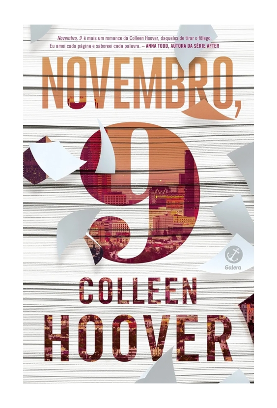

Novembro, 9 - Colleen Hoover
Sinopse
Apesar de ter apenas 18 anos, Fallon já passou por muita coisa. Sobreviveu a um incêndio que a deixou desfigurada, e viu a carreira de atriz desmoronar por conta das cicatrizes. Agora, no aniversário do fatídico acidente, ela finalmente se sente pronta para sair de Los Angeles e recomeçar a vida em Nova York.
No almoço de despedida com o pai, bem na véspera da mudança, Fallon conhece Ben, um aspirante a escritor. A atração entre os dois faz com que passem o dia inteiro juntos, mas a partida iminente de Fallon os impede de viver esse amor. Decididos a vencer o destino, fazem uma promessa: se encontrar todo ano nessa mesma data.
Ao longo do tempo, muitas coisas mudam na vida dos dois, mas o ritual dos encontros e sua história de amor viram enredo do livro de Ben. E, quando parece que o destino finalmente conspira para que fiquem juntos, Fallon descobre algo que a faz questionar as motivações do homem por quem está apaixonada. Será que ela não passa de mais uma personagem na trama de Ben?